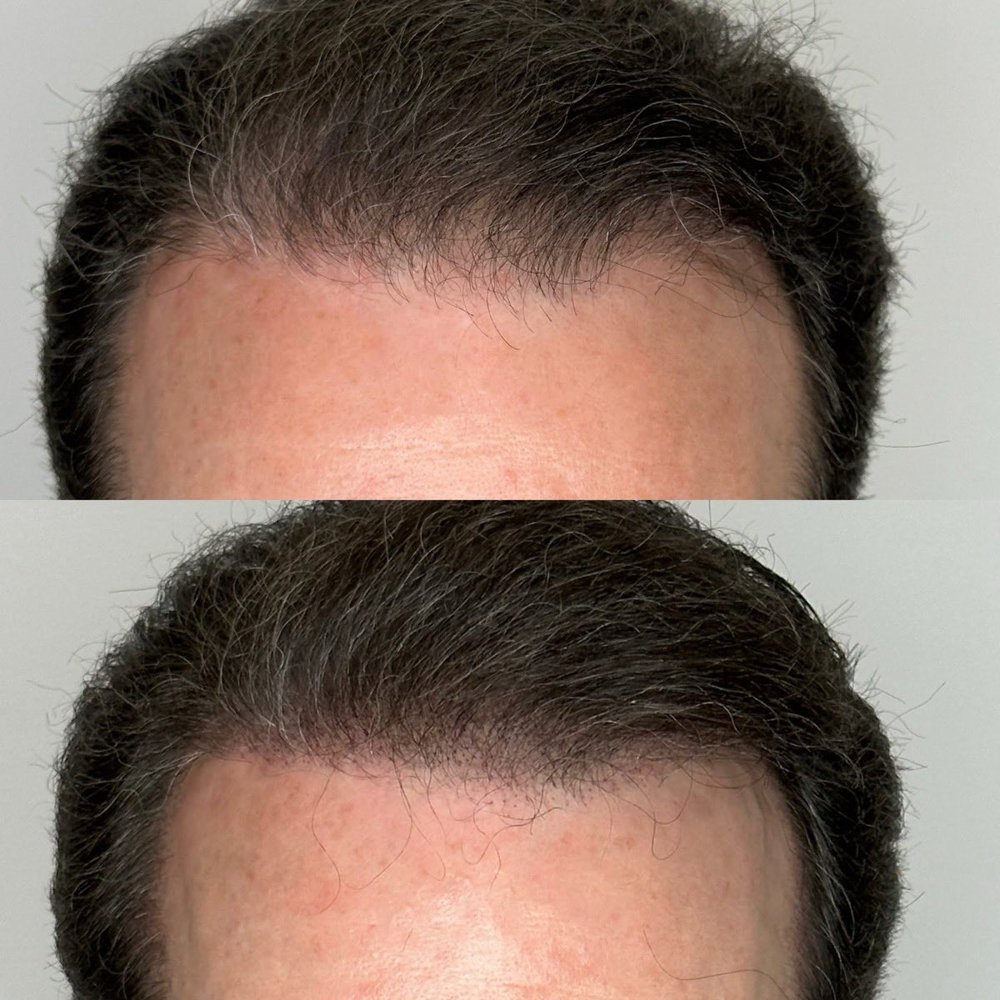
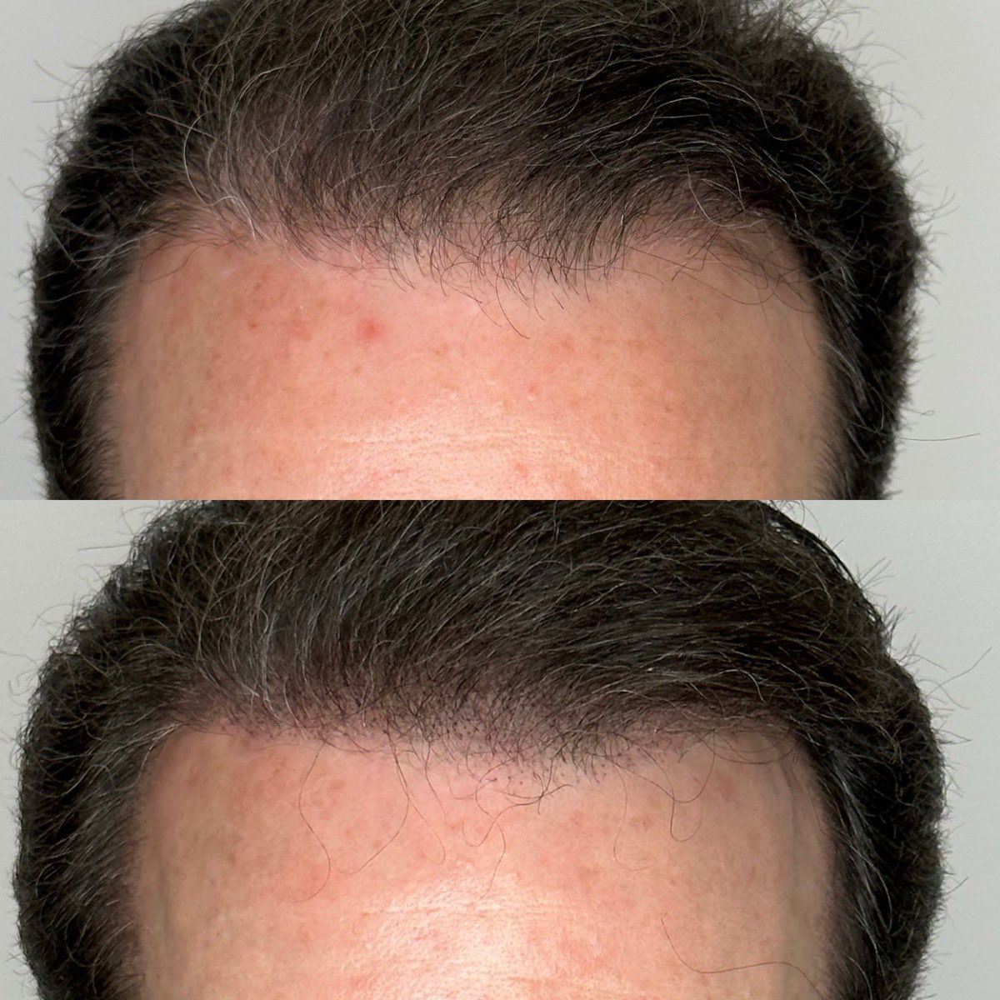
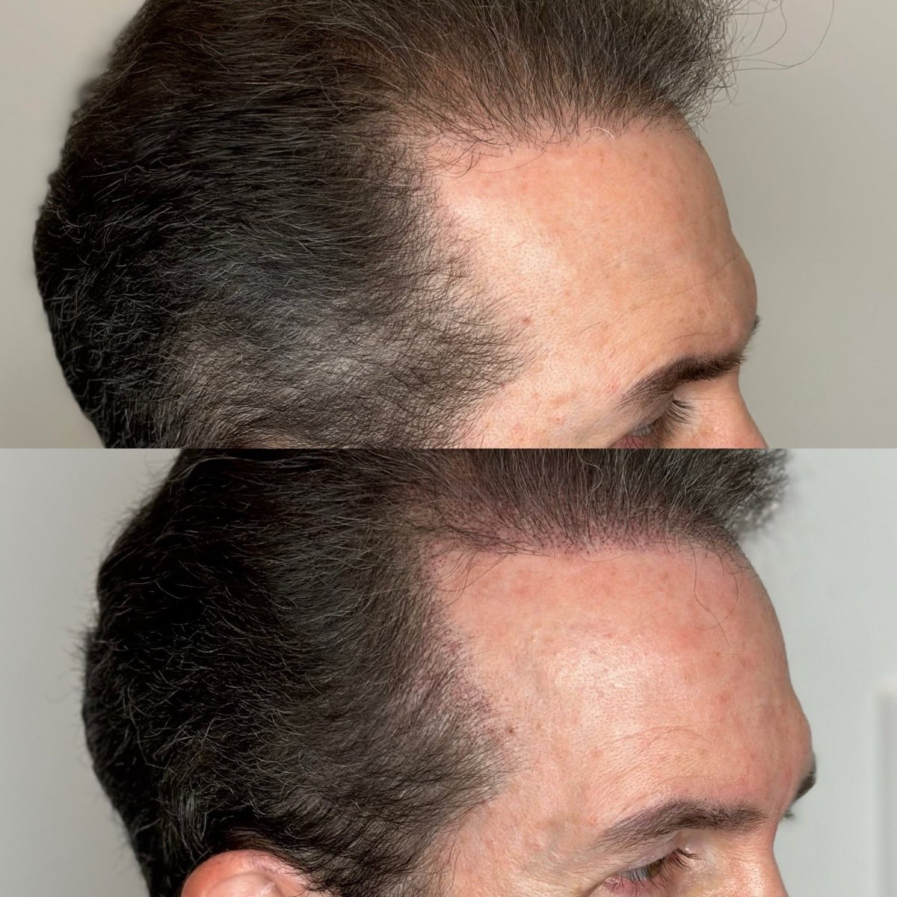
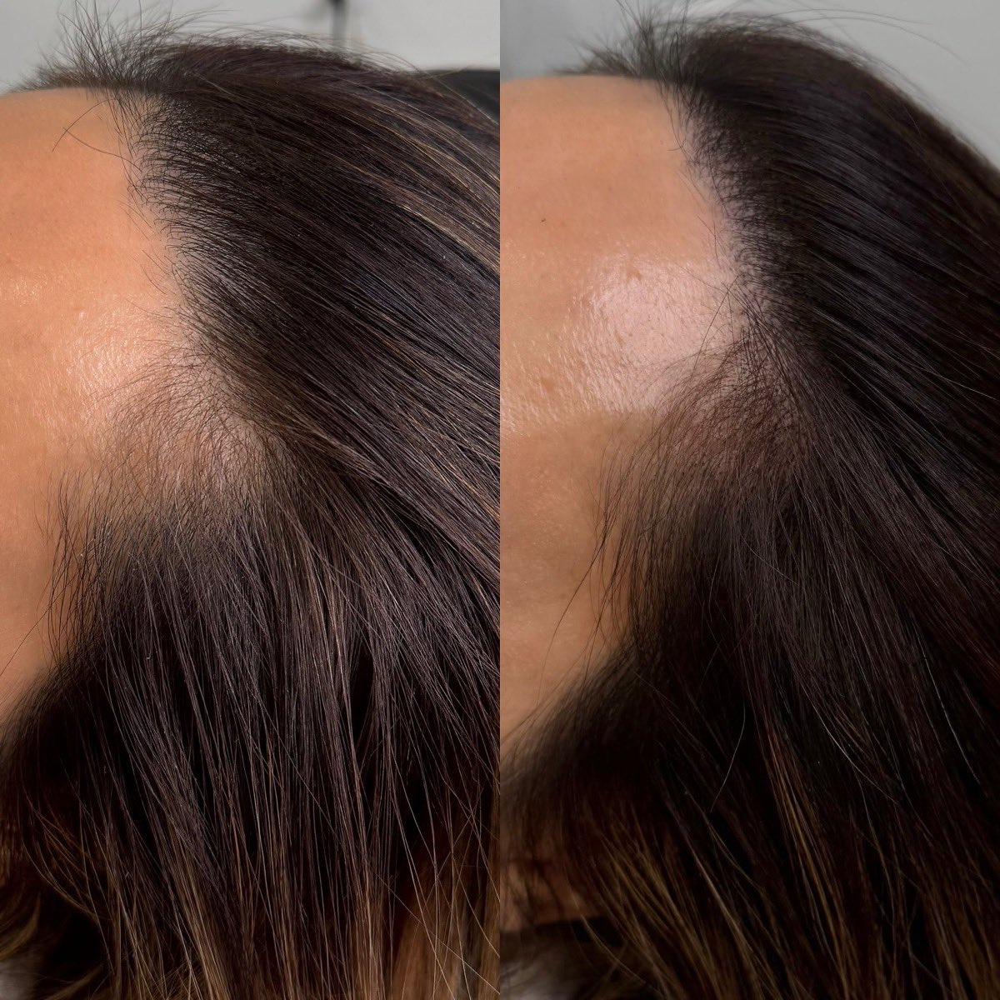
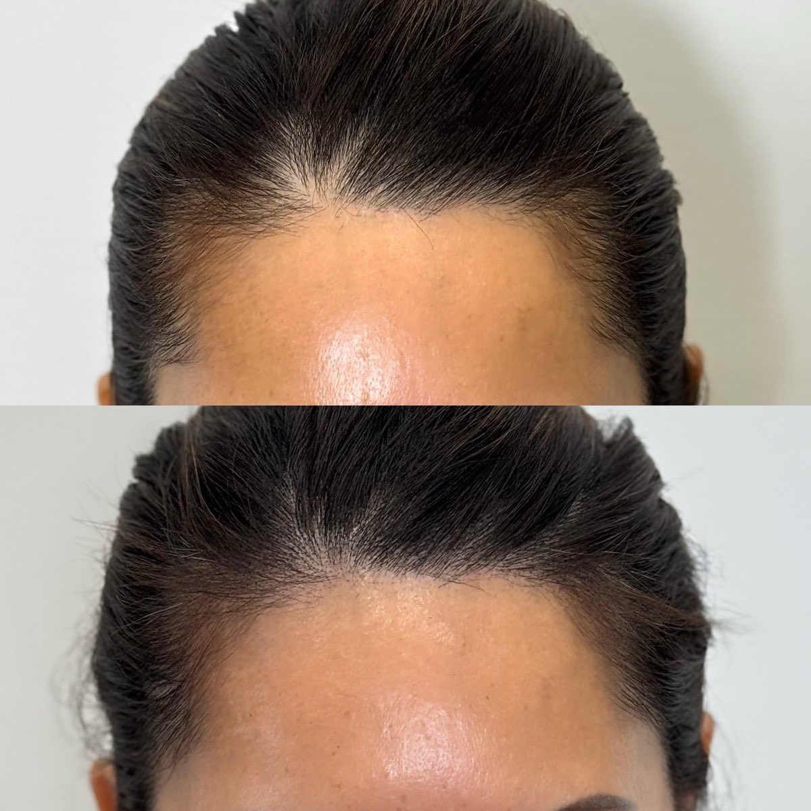
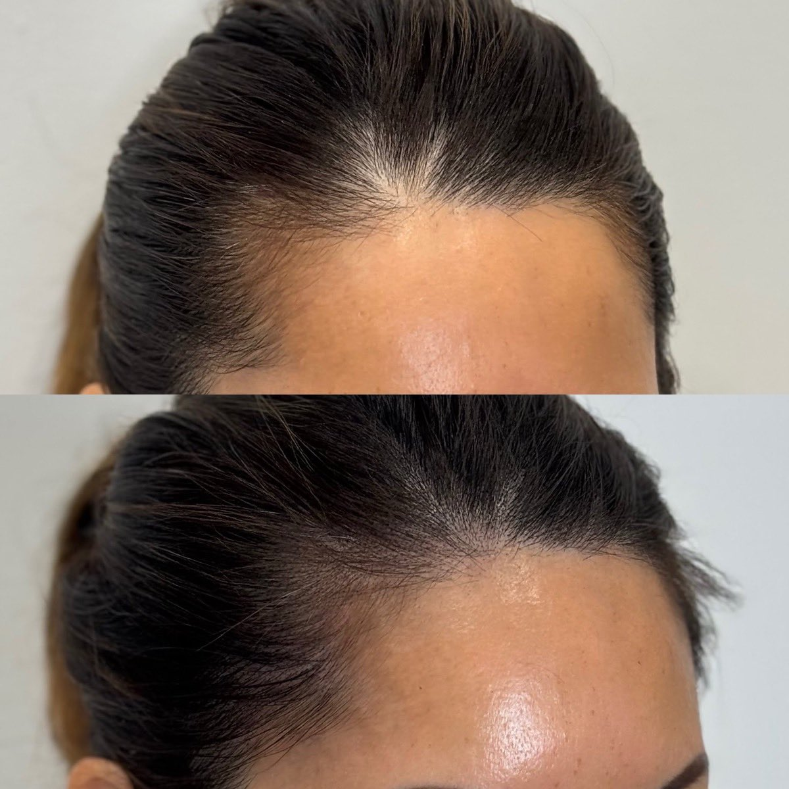
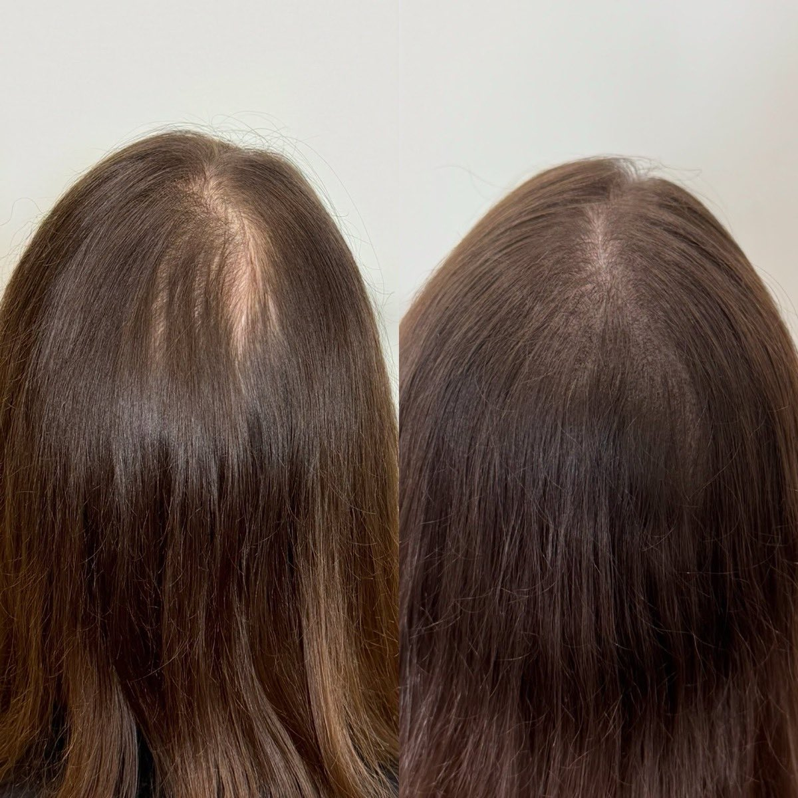
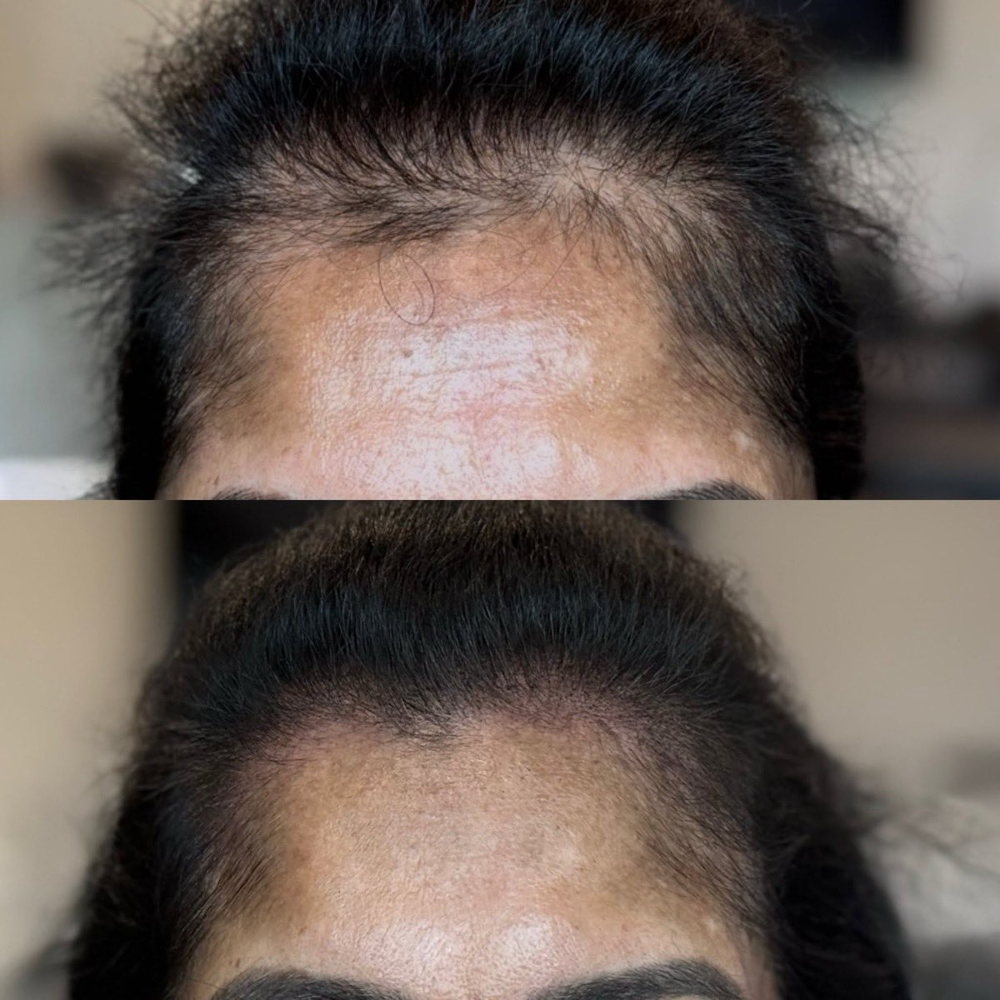
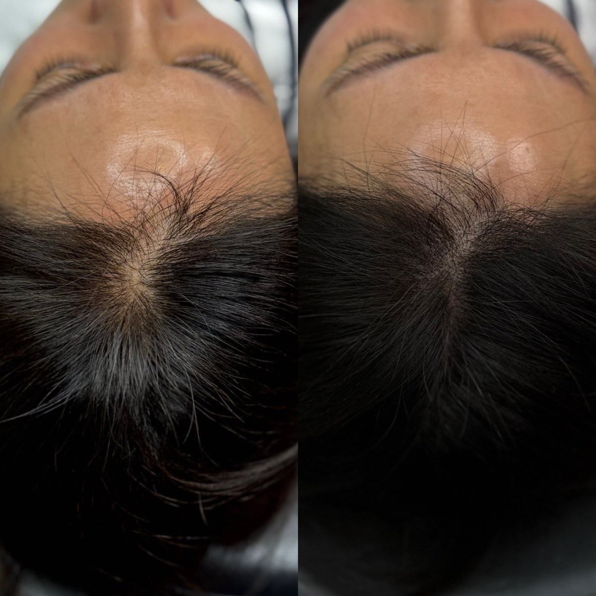
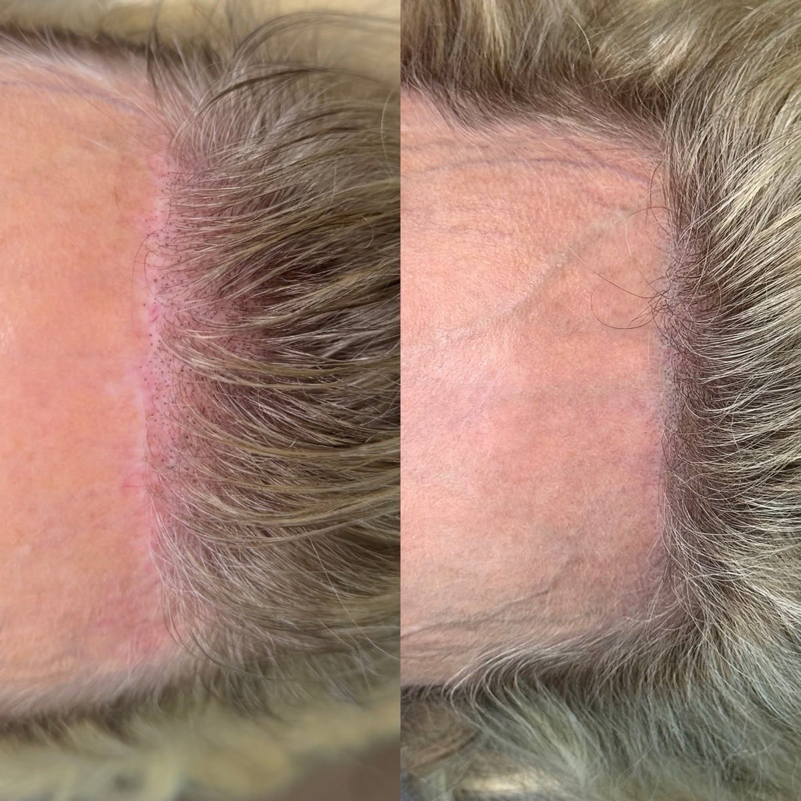

Fuller-looking hair, without the surgery
Scalp Micropigmentation places tiny deposits of specialized pigment into the scalp to recreate the look of natural hair follicles — restoring density, redefining a hairline, and concealing scars, with no surgery and no downtime.

Scalp Micropigmentation · SMPScalp Micropigmentation (SMP) is a non-surgical cosmetic procedure that uses tiny deposits of specialized pigment in the scalp to create the appearance of hair follicles. It's a discreet, buildable way to restore the look of fullness. It is often used to:
- Camouflage male or female pattern baldness
- Create the look of a closely shaved head
- Add the appearance of density to thinning hair
- Conceal scars from transplants, injuries or surgery
- Define or restore a receding hairline
SMP works beautifully for many kinds of hair loss
03What to expect
Most clients need 2–4 sessions, spaced about 1–3 weeks apart. A typical session takes 2–5 hours depending on the area.
Foundation & design
The base layer is built and your hairline is mapped and designed to suit your features.
Density & blending
Coverage is layered up and blended for natural depth and a seamless transition.
Refinement
Detail work sharpens the result, adding realism and evening out the finish.
Final adjustments
If needed, a final visit fine-tunes density and tone to complete the look.
Two very different paths to fuller-looking hair
Both can be excellent — they simply do different things. SMP recreates the look of density on the surface with no surgery; a transplant relocates living follicles. Here's how they compare.
Comfortable for most clients
A light, scratchy sensation
Most people find SMP less painful than a traditional tattoo — usually a mild discomfort or scratching sensation rather than real pain.
Temples & hairline
Areas near the temples and along the hairline tend to be a little more sensitive. We work with your comfort in mind throughout the session.
06The healing process
SMP settles gradually. Here's the typical timeline from fresh treatment to final, natural-looking result.
Fresh & bold
Slight redness is normal, and the pigment looks darker and more defined than the final result.
Settling in
Light flaking may occur as the skin heals, and the color begins to soften.
Natural finish
The pigment settles fully into a soft, natural appearance — the look you'll keep.
Simple steps for the cleanest result
- Avoid washing the scalp for several days
- Avoid heavy sweating for a few days
- Avoid direct sun exposure during healing
- Use SPF on the scalp long-term to protect your result
Honest, and worth knowing
When performed correctly with quality pigments and proper sanitation, SMP is generally low risk. Done poorly, the potential issues to be aware of include:
- Poorly designed or unnatural hairlines
- Pigment migration, where dots become blurry over time
- Color shifting to blue, green or gray if improper pigments are used
- Infection if sanitation standards are poor
- Uneven fading
This is exactly why technique, pigment quality and a sterile setup matter so much — and what your consultation is for.
09Real results
Before & after scalp micropigmentation from real Artsé clients. Results vary with skin type, hair and healing.









Before · After
Restore your confidence.
Whether you want to rebuild a hairline, add density to thinning hair, or soften a scar, SMP offers a non-surgical path to a fuller-looking result. Start with a consultation for a plan tailored to your hair and goals.